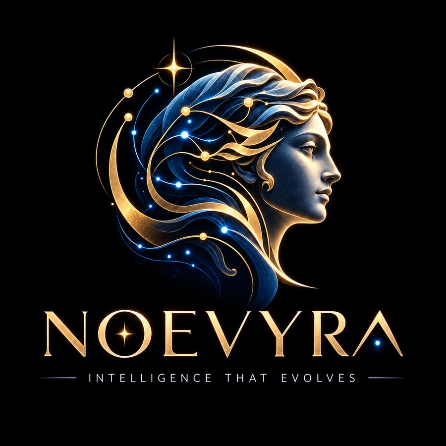

Context gets rebuilt and lost.
- × Re-explain architecture and constraints every session
- × Paste large “just in case” prompts that burn tokens
- × Get inconsistent advice from stale, unattributed docs
- × Lose useful thinking when switching agents
Your model is not the bottleneck. Rebuilding the same context is. Noevyra gives every agent the project decisions, trusted evidence and fitting tools it needs—without another giant prompt.

Every new chat or agent repeats work you already paid for: rediscovering the repo, rereading docs, rebuilding decisions and guessing which tools fit.
A deterministic baseline that gives any agent a compact plan, evidence and the right capabilities without depending on a fancy model.
Conditionally refresh explicitly registered sources, chunk them locally and keep URL, hash and freshness provenance. Remote content remains inert data.
Detect languages, frameworks, manifests, CI and deployment signals, then combine them with reviewed memory and task-relevant evidence.
Compile an approach, risks, verification gates and explainable skill, MCP or CLI suggestions inside a strict token budget.
Use the CLI directly or expose the same compiler through MCP. The intelligence pack stays inspectable and model-independent.
brain run claude "Build the booking API"
Or call brain_advise from any compatible MCP client.
v0.2.1 ships the safe, testable substrate plus daily refresh without widening the trust boundary.
Built by Tommy / WolfCanCode. Noevyra remembers decisions, pulls trusted best practices and turns both into compact guidance that any agent can consume.
v0.2.1 ships the deterministic intelligence substrate and opted-in daily trusted-source refresh in one verified binary.
curl -fsSL https://raw.githubusercontent.com/WolfCanCode/personal-ai-brain/main/install.sh | sh export PATH="$HOME/.local/bin:$PATH" brain init # Optional: seed trusted sources and refresh them daily brain sources seed && brain sources sync brain init --schedule # Optional: pin a release curl -fsSL https://raw.githubusercontent.com/WolfCanCode/personal-ai-brain/main/install.sh | BRAIN_VERSION=v0.2.1 sh
No Go or Node required · SHA-256 verified before installation.
Windows PowerShell installer is available in the repository.
Skills and MCPs are suggested, never silently installed or trusted.